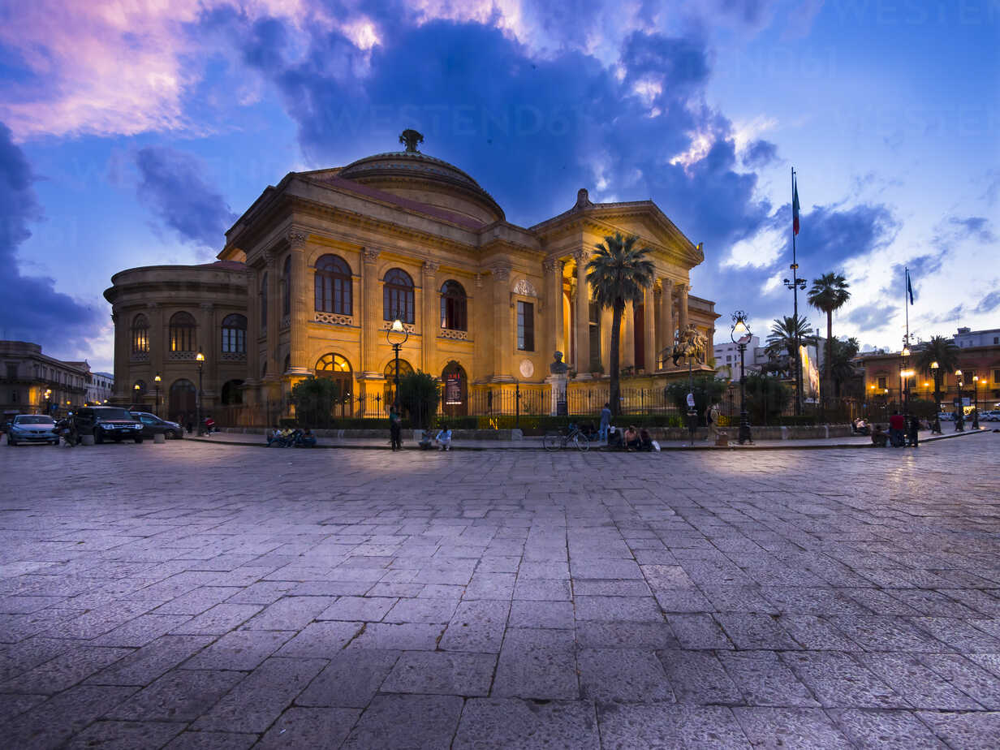

Il salotto monumentale della cultura lirica.
La Piazza Verdi di Palermo è uno degli spazi culturali più importanti della città e nasce come area scenografica attorno al Teatro Massimo. È un esempio di piazza ottocentesca legata alla cultura e allo spettacolo.
Dal punto di vista architettonico, la piazza ha una forte impronta monumentale e simmetrica, pensata per valorizzare la presenza del teatro come elemento centrale.
Il suo elemento principale è proprio il Teatro Massimo, uno dei più grandi teatri lirici d’Europa. Attorno ad esso si sviluppa la piazza con edifici storici e spazi urbani ordinati.
Oggi è un punto fondamentale della vita culturale palermitana. Ospita eventi, spettacoli e rappresenta uno dei luoghi più visitati della città.
